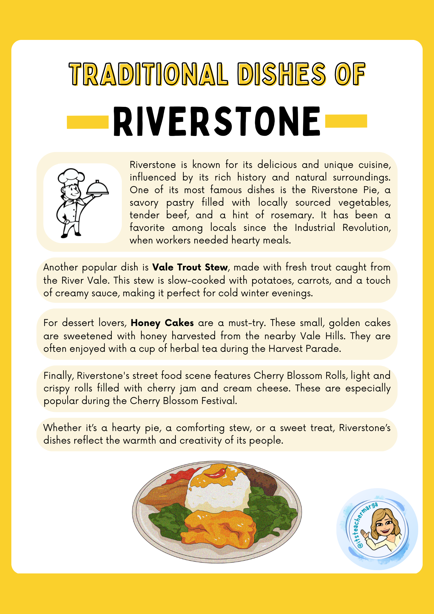

Read the text and answer the questions

- What is Riverstone Pie filled with?
- Where does the trout for Vale Trout Stew come from?
- When did Riverstone Pie become popular?
- What are Honey Cakes sweetened with?
- What festival makes Cherry Blossom Rolls especially popular?
- Name two ingredients in Vale Trout Stew.
- Which dish would you choose for a special dinner? Why? Write 2-3 sentences.